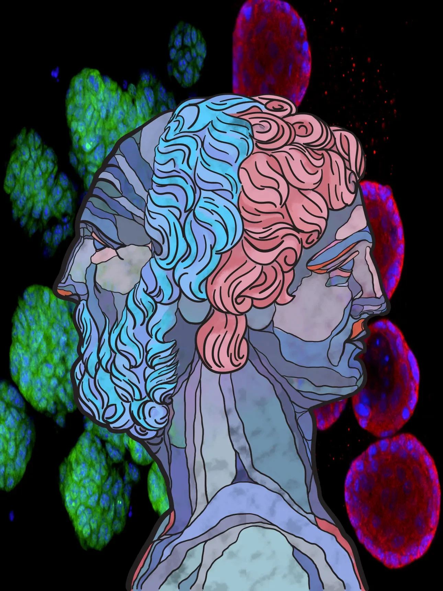

Our lab is dedicated to uncovering the molecular mechanisms that drive resistance to targeted and immune therapies in prostate and other cancers. We are also pioneering innovative therapeutic strategies to overcome these resistances, utilizing a range of state-of-the-art techniques, including 3D-cultured organoids, single-cell sequencing, and spatial transcriptomics. Our recent work has been published in top-tier journals such as Cancer Cell (2020, 2023), Cancer Discovery (2024), Nature Cancer (2022), and Oncogene (2024).
Three minutes with the PI, Dr. Ping Mu — lineage plasticity, 3D organoids, AI-driven drug discovery, and the fight against therapy resistance, told by the lab itself.
Unravel how lineage plasticity drives resistance — and build combination therapies to overcome it.
Identify new druggable tumor suppressors and oncogenes that drive therapy resistance.
Investigate the mechanisms behind mutagenesis, tumor heterogeneity, and evolution.
Examine how epigenetic rewiring fuels resistance — and how to reverse it.
Explore how cancer cells reshape the microenvironment and immune system to resist therapy.
Develop small-molecule inhibitors and protein degraders through our high-throughput platform.